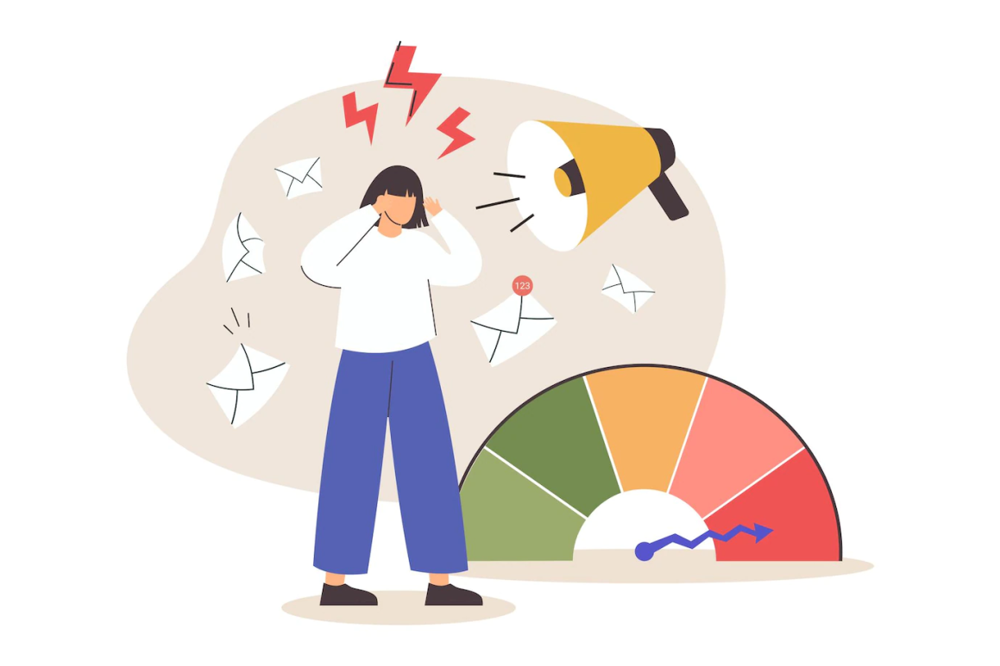

Burnout is a state of chronic physical and emotional exhaustion that results from prolonged exposure to high levels of stress, particularly in work-related settings. It is characterized by feelings of extreme fatigue, detachment from work or personal responsibilities, and a reduced sense of accomplishment or efficacy. Burnout can affect various aspects of a person's life, leading to a decline in overall well-being, performance, and motivation.

Burnout vs Depression
Burnout and depression are both mental health conditions, but they have distinct characteristics and causes. While they may share some symptoms, they differ in their origins and the context in which they occur. Burnout primarily relates to chronic workplace stress and results from prolonged exposure to high demands and responsibilities. It leads to emotional and physical exhaustion, detachment from work, and reduced feelings of accomplishment. Factors like heavy workloads, lack of control, and poor work-life balance contribute to burnout. Addressing these work-related stressors through breaks, boundaries, and support can help alleviate burnout.
Depression, on the other hand, is a broader mental health condition triggered by various factors, including genetics, trauma, and life changes. It goes beyond work-related stress and affects multiple areas of life. Depression is characterized by persistent sadness, anhedonia (loss of interest or pleasure), cognitive difficulties, changes in appetite and sleep patterns, feelings of worthlessness, and suicidal thoughts. Treating depression typically involves professional interventions such as therapy, medication, and lifestyle changes.
Understanding the differences between burnout and depression is vital for accurate diagnosis and appropriate treatment. While addressing workplace factors can help with burnout, depression requires more comprehensive approaches to tackle its complex causes and impacts on overall functioning and well-being. Seeking support from mental health professionals is crucial for those experiencing symptoms of burnout or depression to receive tailored and effective care.